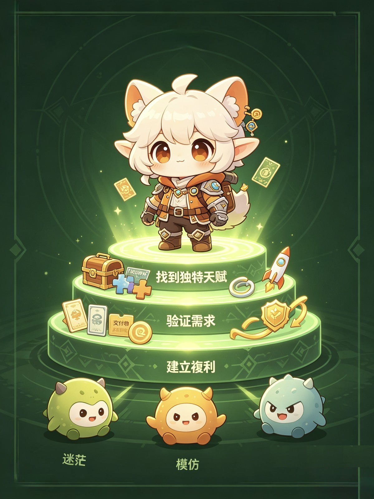

納瓦爾：三步找到「天生該吃這碗飯」的領域
在「成為自己」這件事上，沒有人能比你做得更好。—— 納瓦爾 如果你還在迷茫該做什麼、往哪走，別急著模仿別人。納瓦爾用一生經驗告訴我們：真正的捷徑，是把自己變成「稀缺品」。下面三步，帶你從內到外，把天賦變成事業👇 第一步：…

在「成為自己」這件事上，沒有人能比你做得更好。—— 納瓦爾
如果你還在迷茫該做什麼、往哪走，別急著模仿別人。納瓦爾用一生經驗告訴我們：真正的捷徑，是把自己變成「稀缺品」。下面三步，帶你從內到外，把天賦變成事業👇
第一步：向內挖掘，找到你的「特定知識」
什麼是特定知識？
- 無法被培訓，只能被學習（基因＋獨特經歷）
- 對你像玩耍，對別人像工作
- 往往處於知識邊緣，需要深度投入
社會可以培訓你，就可以培訓別人取代你。
💡 如何找到你的特定知識
- 追溯「心流時刻」——做什麼事會忘記時間？
- 傾聽「非功利熱愛」——不給錢也願意做的是什麼？
- 進行「技能疊加」——把 2～3 項前 25% 的技能組合起來，就是獨一無二的你。
第二步：向外驗證，尋找「需求交叉點」
納瓦爾財富公式：
特定知識 ＋ 社會需求 ＋ 槓桿 ＝ 財富
問自己：你的知識能解決什麼高價值痛點？幫人省錢？省時間？獲得快樂？避免痛苦？
⚡ 別等「完美」再發布
納瓦爾說：靈感是會腐爛的。
- 今天有靈感 → 24 小時內做出最小產品（一篇短文、一個清單、一個簡單工具）
- 立刻發布，哪怕只發給 10 個人
- 根據反饋迭代，而不是空想
- 用「無需許可」的槓桿：代碼或媒體
第三步：持續放大，構建你的「複利系統」
所有回報都來自複利，你需要四樣：
- 責任槓桿：用真名，建立信任
- 判斷力複利：每日微決策，定期複盤
- 人際複利：只選高智商、高能量、高誠信的人
- 內容複利：寫文章、做視頻，睡覺也在幫你工作
✅ 今日啟動清單
- 寫下 3 件你「毫不費力且忘我」的事
- 把這 3 件事組合，寫出能解決的 1 個獨特問題
- 用 24 小時做出一個「最小產品」
- 發給 3 個朋友，問：「這對你有用嗎？你願意為此付多少錢？」
從「證明自己」，轉向「為誰解決什麼」。
💎 納瓦爾的終極提醒
財富不會流向最努力的人，而會流向最「像自己」的人。
不要做更好的別人，要做不可替代的自己。從今天起，把你的「特定知識」，變成你的「無限遊戲」吧。